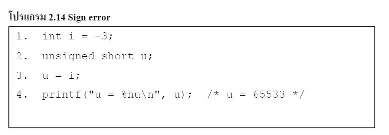

| เกิดขึ้นเมื่อมีการแปลงจาก signed integer ไปเป็น unsigned integer เมื่อ signed integer ถูกแปลงไปเป็น unsigned integer ที่มีขนาดเท่ากัน bit pattern จะถูกเก็บรักษาไว้ และเมื่อ signed integer ถูกแปลงไปเป็น unsigned integer ด้วยค่าที่มีขนาดใหญ่กว่า จะมีการขยายค่านั้นก่อนที่จะมีการแปลงค่า ซึ่งทั้งสองกรณีนี่ high-order bit จะถูกตัดออกไปเป็น signed bit ถ้าค่าของ signed integer ไม่เป็นค่าลบ ค่านั้นก็จะไม่เปลี่ยนแปลง อย่างไรก็ตามเมื่อค่าของ signed integer เป็นค่าลบผลที่ได้มักจะเป็นค่าบวกที่มีขนาดใหญ่กว่าค่าเดิม ซึ่งแสดงตามโปรแกรม 2.14 | ||
|

|
||